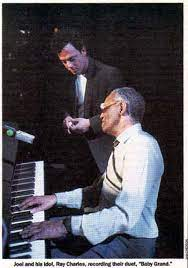

The piano is a timeless instrument that has been used for centuries. We have seen them in music and pop culture and they remain relevant today. From movies like The Pianist and Ray, to artists like Billy Joel and Stevie Wonder, the sound of the piano can be recognized anywhere.
Pictured to the left is two of the modern era greats in Billy Joel and Ray Charles. To the right is a poster for the Oscar winning film "The Pianist"
Possibly the greatest attraction to the piano in recent history comes from Americas Got Talent. In 2019, Kodi Lee auditioned for Americas Got Talent and was awarded the Golden Buzzer. He is a 25-year old blind and autistic musical prodigious savant. Kodi has an audio photographic memory, in which he can recall music he hears after just one listen. An unbelievable gift in itself, but his musical expression and prowess top even that.